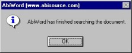
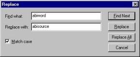

| |
|
About AbiWord About Open Source Index Contents What's New Check Version Introduction Installation Getting Started The Workspace Entering Text Formatting Edit Commands Paragraphs Styles Inserting Objects Printing Preferences Shortcuts abisource.com FAQ Credits Search |
Find and ReplaceWhile you are editing a long document
in AbiWord, you may be interested in finding quickly
a particular word or group of words.
There are two commands for doing this: The Find commandThere are two ways to do this command:
The window below then appears:
Type the word or words you want to find in the "Find what:" field and click on the "Find next" button. If the option "Match case" is checked, the search will look for the string with the upper and lower case as you entered it. If it is unchecked, AbiWord will ignore case when looking for the word or words. In the above example, it will find only the word AbiWord and not abiword or Abiword. Each time the word is found, the search will pause and the word found is then selected. Click on "Find next" to continue searching or "Cancel" to abandon the search. When the search reaches the end of the document or AbiWord did not find the requested word, the window below appears to tell you that AbiWord has finished searching the document. Click OK.  The Replace commandThe Replace command is like the Find command but more evolved. This command lets you search for a word or group of words and replace it with another word or group of words. There are likewise two ways to start the Replace command:
Then the window below appears:  Type in the "Find what:" field the word or character string which you would like to replace. Likewise type in the "Replace with:" field the word or character string to replace it with. Then click on the "Find next" button. Again you can check "Match case", as in the Search command above. Each time the word is found, the search pauses and the word found is selected. Click on "Replace" to replace the word in the "Find what" field with the word in the "Replace with" field or on "Find Next" to continue the search without replacing the word. The "Replace All" button will replace all the words in the document without asking each time. The "Cancel" button will abandon the search. When the search arrives at the end of the document or AbiWord doesn't find the word you're looking for, the window below appears to tell you that AbiWord has finished searching the document. Click OK.
|